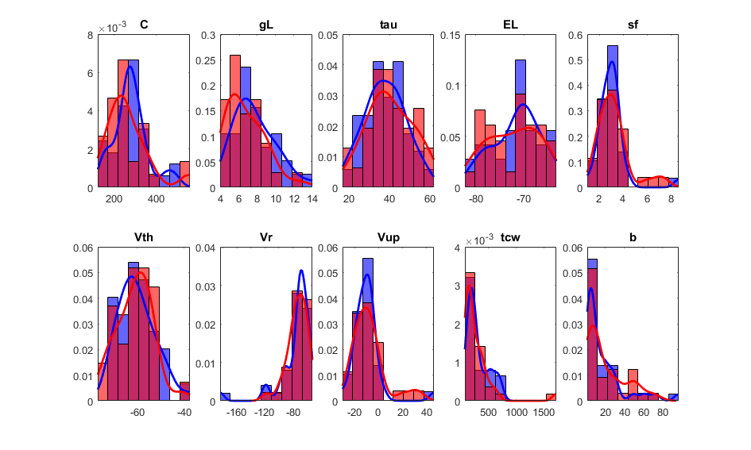
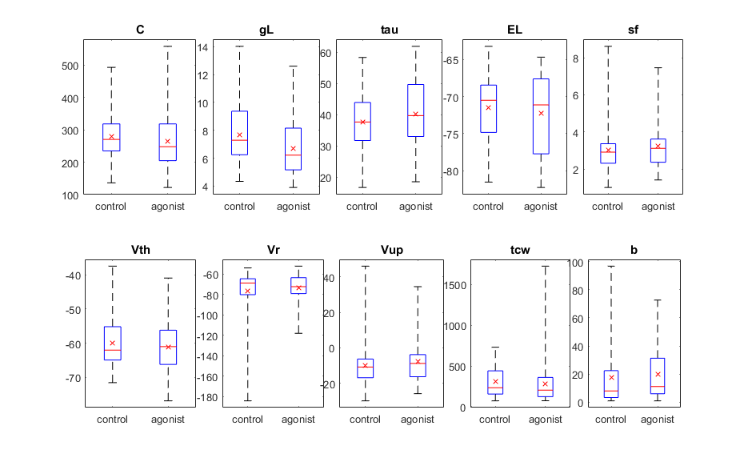
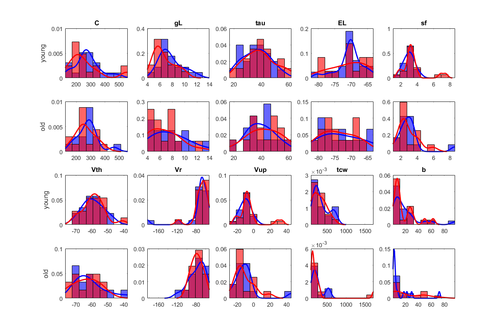
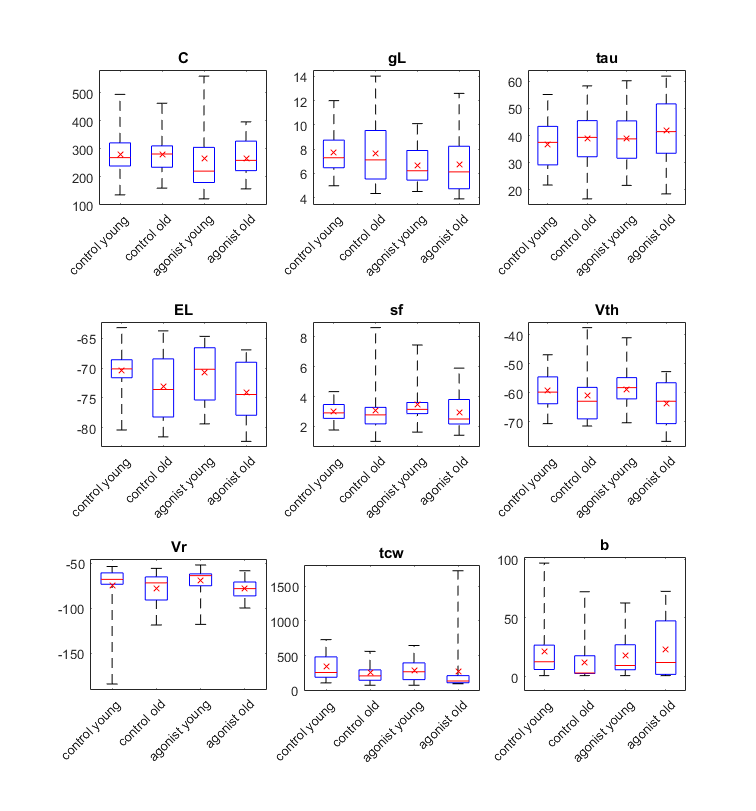
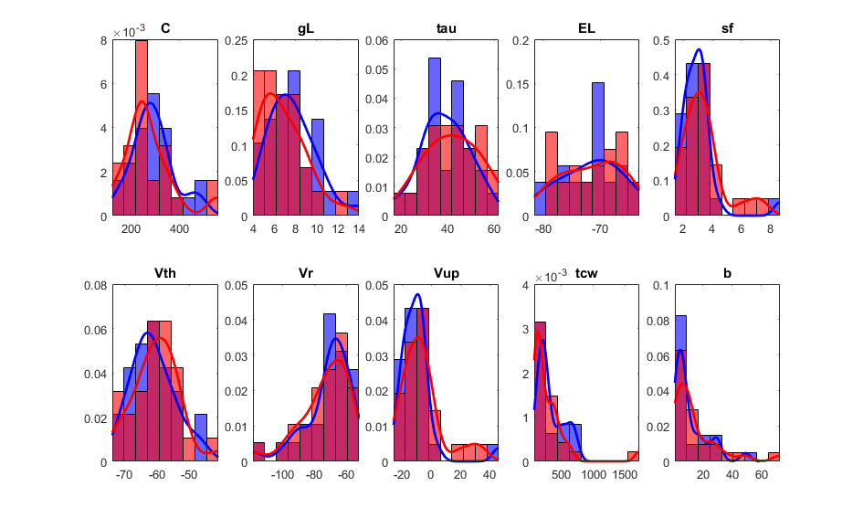
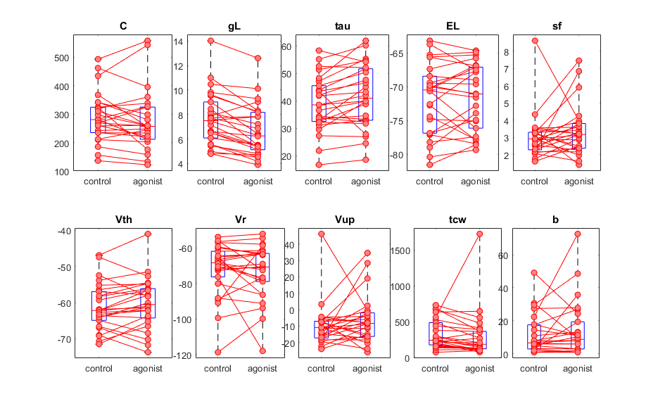

Statistical analysis of the 'SimpAdEx' model parameters for D1
This worksheet contains all code and further explanations to perform statistical analyses of the model parameters for D1
Contents
Loading and processing data
We load the data containing all parameters
load('EverythingInOneFile34.mat');
For the subsequent analyses, we only need some of the information. Therefore, we generate a new data structure / data array:
pharma = reshape(pharma,[690 1]); type = reshape(type,[690 1]); LoV = ["genotype","age2","cell_type2","layer","species","pharma","type"]; for i=1:690 for j=1:size(LoV,2) if eval("~isa(" + LoV(j) + "{" + i + ",1},'char')") eval(LoV(j) + "{" + i + ",1}='unknown';") end end end Data{:,1} = genotype; Data{:,2} = age2; Data{:,3} = cell_type2; Data{:,4} = layer; Data{:,5} = species; Data{:,6} = pharma; Data{:,7} = type; Data{:,8} = C; Data{:,9} = gL; Data{:,10} = tau; Data{:,11} = EL; Data{:,12} = sf; Data{:,13} = Vth; Data{:,14} = Vr; Data{:,15} = Vup; Data{:,16} = tcw; Data{:,17} = b;
We create new data frame that contains D1-data only
Data_D1_cont = Data(:,[2:5,8:17]); Data_D1_cont = cellfun(@(x) x(ind_D1_control), Data_D1_cont, 'UniformOutput', false); Data_D1_agon = Data(:,[2:5,8:17]); Data_D1_agon = cellfun(@(x) x(ind_D1_agonist), Data_D1_agon, 'UniformOutput', false); ColNam = ["age","cell_type","layer","species","C","gL","tau","EL","sf","Vth","Vr","Vup","tcw","b"];
In a first step we look at the number of data points with respect to specific conditions (age, cell type, layer, species)
N_cont = size(Data_D1_cont{1,1},1);
disp(['The control data set contains ' num2str(N_cont) ' data points'])
class_age_cont = unique(Data_D1_cont{1,1});
disp(['The following age categories are present for control: ' strjoin(class_age_cont,', ')])
N1 = sum(cellfun(@isempty,strfind(Data_D1_cont{1,1},'old')));
disp([num2str(N1) ' data points belong to the category "old"'])
class_celltype_cont = unique(Data_D1_cont{1,2});
disp(['The following cell types are present for control: ' strjoin(class_celltype_cont,', ')])
class_layer_cont = unique(Data_D1_cont{1,3});
disp(['The following layers are present for control: ', strjoin(class_layer_cont,', ')])
class_species_cont = unique(Data_D1_cont{1,4});
disp(['The recordings come from the follwoing species: ', strjoin(class_species_cont,', ')])
disp([' '])
N_agon = size(Data_D1_agon{1,1},1);
disp(['The agonist data set contains ' num2str(N_agon) ' data points'])
class_age_agon = unique(Data_D1_agon{1,1});
disp(['The following age categories are present for agonist: ' strjoin(class_age_agon,', ')])
N2 = sum(cellfun(@isempty,strfind(Data_D1_agon{1,1},'old')));
disp([num2str(N2) ' data points belong to the category "old"'])
class_celltype_agon = unique(Data_D1_agon{1,2});
disp(['The following cell types are present for agonist: ' strjoin(class_celltype_agon,', ')])
class_layer_agon = unique(Data_D1_agon{1,3});
disp(['The following layers are present for control: ' strjoin(class_layer_agon,', ')])
class_species_agon = unique(Data_D1_agon{1,4});
disp(['The recordings come from the follwoing species: ' strjoin(class_species_agon,', ')])
The control data set contains 34 data points The following age categories are present for control: old, young 14 data points belong to the category "old" The following cell types are present for control: PC The following layers are present for control: L5 The recordings come from the follwoing species: rat The agonist data set contains 31 data points The following age categories are present for agonist: old, young 14 data points belong to the category "old" The following cell types are present for agonist: PC The following layers are present for control: L5 The recordings come from the follwoing species: rat
Analysis of the entire D1 data set by pooling over young and old animals
In a first step, we pool data from 'old' and 'young' animals together and generate the model parameter histograms to eyeball the sample distributions and to get a first impression of differences between control and agonist.
figure() for i=1:10 subplot(2,5,i) EMin = min([Data_D1_cont{1,4+i},Data_D1_agon{1,4+i}]); EMax = max([Data_D1_cont{1,4+i},Data_D1_agon{1,4+i}]); edges = linspace(EMin,EMax,10); histogram(Data_D1_cont{1,4+i},edges,'FaceColor','b','Normalization','pdf') hold on; histogram(Data_D1_agon{1,4+i},edges,'FaceColor','r','Normalization','pdf') [f1,x1] = ksdensity(Data_D1_cont{1,4+i}); [f2,x2] = ksdensity(Data_D1_agon{1,4+i}); plot(x1,f1,'b','LineWidth',2) plot(x2,f2,'r','LineWidth',2) title(ColNam(4+i)) xlim([EMin,EMax]) end set(gcf,'units','centimeters','position',[1,1,25,15]) snapnow; close
By eyeball inspection, most distributions seem to be nonnormal. Also, the distributions of control and agonist conditions look alike. We cannot expect hugh differences in mean, median or standard deviation. This can also be seen in a boxplot summary:
figure() for i=1:10 subplot(2,5,i) Val = [Data_D1_cont{1,4+i},Data_D1_agon{1,4+i}]; Label = [ones(1,length(Data_D1_cont{1,4+i})),2*ones(1,length(Data_D1_agon{1,4+i}))]; boxplot(Val,Label,'Labels',{'control','agonist'},'Whisker',10)%,'Notch','on')hold on hold on; plot([mean(Val(Label==1)),mean(Val(Label==2))], 'xr') title(ColNam(4+i)) end set(gcf,'units','centimeters','position',[1,1,25,15]) snapnow; close;
To get access to the parameter statistics, we create an array where each row represents one parameter and the columns contain mean (control, agonist), SEM (control, agonist) and standard deviation (control, agonist)
ParaStat_D1_all = zeros(10,6); for i=1:10 N = length(Data_D1_cont{1,4+i}); M = length(Data_D1_agon{1,4+i}); ParaStat_D1_all(i,1:2) = [mean(Data_D1_cont{1,4+i}), mean(Data_D1_agon{1,4+i})]; % mean: control, agonist ParaStat_D1_all(i,3:4) = [std(Data_D1_cont{1,4+i})/sqrt(N), std(Data_D1_agon{1,4+i})/sqrt(M)]; % SEM: control, agonist ParaStat_D1_all(i,5:6) = [std(Data_D1_cont{1,4+i}), std(Data_D1_agon{1,4+i})]; % std: control, agonist end
Finally, we need to check if the mean and variance of the control and agonist distributions are significantly different. We do so by running a two-sample t-test (in case the distributions are halfway normal) and a Wilcoxon rank sum test (for non-normal distributions) for the mean, and a Bartlett’s, Brown-Forsythe and Levene’s test for the variance.
H_mean_t = zeros(1,10); H_mean_rank = zeros(1,10); H_var_brown = zeros(1,10); H_var_levene = zeros(1,10); H_var_bart = zeros(1,10); for i=1:10 x = Data_D1_cont{1,4+i}; y = Data_D1_agon{1,4+i}; % Check mean ... [h,~,ci,~] = ttest2(x,y,'VarType','unequal'); H_mean_t(i) = h; [~,h] = ranksum(x,y); H_mean_rank(i) = h; % Check variance ... [p,~] = vartestn([x,y]',[zeros(1,length(x)),ones(1,length(y))]','TestType','BrownForsythe','Display','off'); if p<0.05 H_var_brown(i) = 1; end [p,~] = vartestn([x,y]',[zeros(1,length(x)),ones(1,length(y))]','TestType','LeveneQuadratic','Display','off'); if p<0.05 H_var_levene(i) = 1; end [p,~] = vartestn([x,y]',[zeros(1,length(x)),ones(1,length(y))]','TestType','Bartlett','Display','off'); if p<0.05 H_var_bart(i) = 1; end end id1 = find(H_mean_t==1); id2 = find(H_mean_rank==1); if (isempty(id1) && isempty(id2)) disp('No mean is significantly different') else for i=1:length(id1) disp(join(['According to a two-sample t-test, the mean of the' ColNam(4+id1(i)) 'distribution is significantly different between control and agonist'])) end for i=1:length(id2) disp(join(['According to a Wilcoxon rank sum test, the mean of the' ColNam(4+id2(i)) 'distribution is significantly different between control and agonist'])) end end id1 = find(H_var_bart==1); id2 = find(H_var_brown==1); id3 = find(H_var_levene==1); if (isempty(id1) && isempty(id2)) disp('No varaince is significantly different') else for i=1:length(id1) disp(join(['According to a Bartlett’s test, the variance of the' ColNam(4+id1(i)) 'distribution is significantly different between control and agonist'])) end for i=1:length(id2) disp(join(['According to a Brown-Forsythe test, the variance of the' ColNam(4+id2(i)) 'distribution is significantly different between control and agonist'])) end for i=1:length(id3) disp(join(['According to a Levene’s test, the variance of the' ColNam(4+id3(i)) 'distribution is significantly different between control and agonist'])) end end
No mean is significantly different According to a Bartlett’s test, the variance of the Vr distribution is significantly different between control and agonist According to a Bartlett’s test, the variance of the tcw distribution is significantly different between control and agonist
As some of the parameters are not independent, and in general the distribution can be regarded as multivariate, we perform a MANOVA test (under the probably wrong assumptions that the data comes from a n-dim normal distribution). As we have two groups (control and agonist), MANOVA is equivalent and the test reduces to Hotelling's T-square.
We first look at the Pearson correlation between the parameters
x = []; y = []; for i=1:10 x = [x Data_D1_cont{1,4+i}']; y = [y Data_D1_agon{1,4+i}']; end Corr_cont = corr(x); Corr_agon = corr(y);
The analysis shows that the parameters "Vup" and "sf" are not independent. Furthermore, tau=C/gL. Therefore, we exclude the parameters "tau" and "Vup" from the subsequent analysis
x(:,[3,8]) = []; y(:,[3,8]) = []; z = [x;y]; group = [zeros(1,length(x)),ones(1,length(y))]; [d,p,stats] = manova1(z,group); [D,P] = HotellingsT2(x,y,0.05,0); if (p<0.05 && P<0.05) disp("According to the MANOVA/Hotellings T2 test, the vector sample means are significantly different.") elseif (p>=0.05 && P<0.05) disp("According to the MANOVA test, the vector of means of control and agonist conditions are not significantly different.") elseif (p<0.05 && P>=0.05) disp("According to the Hotellings T2 test, the vector of means of control and agonist conditions are not significantly different.") else disp("According to the MANOVA/Hotellings T2 test, the vector of means of control and agonist conditions are not significantly different.") end
According to the MANOVA/Hotellings T2 test, the vector of means of control and agonist conditions are not significantly different.
Analysis of young and old animals separately
To check if potential age related differences may confound the test results, we re-do the analyses above for "young" and "old" animals separately. We first look at the histograms again:
ind_young_cont = cellfun(@isempty,strfind(Data_D1_cont{1,1},'young'));
ind_young_agon = cellfun(@isempty,strfind(Data_D1_agon{1,1},'young'));
ind_old_cont = cellfun(@isempty,strfind(Data_D1_cont{1,1},'old'));
ind_old_agon = cellfun(@isempty,strfind(Data_D1_agon{1,1},'old'));
figure()
for i=1:10
EMin1 = min([Data_D1_cont{1,4+i}(ind_young_cont),Data_D1_agon{1,4+i}(ind_young_agon)]);
EMax1 = max([Data_D1_cont{1,4+i}(ind_young_cont),Data_D1_agon{1,4+i}(ind_young_agon)]);
EMin2 = min([Data_D1_cont{1,4+i}(ind_old_cont),Data_D1_agon{1,4+i}(ind_old_agon)]);
EMax2 = max([Data_D1_cont{1,4+i}(ind_old_cont),Data_D1_agon{1,4+i}(ind_old_agon)]);
EMin = min(EMin1,EMin2);
EMax = max(EMax1,EMax2);
% young animals
if i<=5
subplot(4,5,i)
else
subplot(4,5,i+5)
end
edges = linspace(EMin,EMax,10);
histogram(Data_D1_cont{1,4+i}(ind_young_cont),edges,'FaceColor','b','Normalization','pdf')
hold on;
histogram(Data_D1_agon{1,4+i}(ind_young_agon),edges,'FaceColor','r','Normalization','pdf')
[f1,x1] = ksdensity(Data_D1_cont{1,4+i}(ind_young_cont));
[f2,x2] = ksdensity(Data_D1_agon{1,4+i}(ind_young_agon));
plot(x1,f1,'b','LineWidth',2)
plot(x2,f2,'r','LineWidth',2)
title(ColNam(4+i))
xlim([EMin,EMax])
if (ColNam(4+i)=="C" || ColNam(4+i)=="Vth")
ylabel('young')
end
% old animals
if i<=5
subplot(4,5,i+5)
else
subplot(4,5,i+10)
end
edges = linspace(EMin,EMax,10);
histogram(Data_D1_cont{1,4+i}(ind_old_cont),edges,'FaceColor','b','Normalization','pdf')
hold on;
histogram(Data_D1_agon{1,4+i}(ind_old_agon),edges,'FaceColor','r','Normalization','pdf')
[f1,x1] = ksdensity(Data_D1_cont{1,4+i}(ind_old_cont));
[f2,x2] = ksdensity(Data_D1_agon{1,4+i}(ind_old_agon));
plot(x1,f1,'b','LineWidth',2)
plot(x2,f2,'r','LineWidth',2)
xlim([EMin,EMax])
if (ColNam(4+i)=="C" || ColNam(4+i)=="Vth")
ylabel('old')
end
end
set(gcf,'units','centimeters','position',[1,1,30,20])
snapnow; close
 For the sake of completeness, let's have a look at the boxplots:
figure() idx=0; for i=[1,2,3,4,5,6,7,9,10] idx = idx+1; subplot(3,3,idx) Val = [Data_D1_cont{1,4+i}(ind_young_cont),Data_D1_cont{1,4+i}(ind_old_cont),Data_D1_agon{1,4+i}(ind_young_agon),Data_D1_agon{1,4+i}(ind_old_agon)]; Label = [ones(1,length(Data_D1_cont{1,4+i}(ind_young_cont))),2*ones(1,length(Data_D1_cont{1,4+i}(ind_old_cont))),3*ones(1,length(Data_D1_agon{1,4+i}(ind_young_agon))),4*ones(1,length(Data_D1_agon{1,4+i}(ind_old_agon)))]; boxplot(Val,Label,'Labels',{'control young','control old','agonist young', 'agonist old'},'Whisker',20)%,'Notch','on')hold on hold on; plot([mean(Val(Label==1)),mean(Val(Label==2)),mean(Val(Label==3)),mean(Val(Label==4))], 'xr') set(gca,'XTickLabelRotation',45) title(ColNam(4+i)) end set(gcf,'units','centimeters','position',[1,1,20,30]) snapnow; close
Finally we perform a separate MANOVA test for both young and old animals to check if the means between control and agonist sample distributions are significantly different.
x1 = []; y1 = []; x2 = []; y2 = []; for i=[1,2,4,5,6,7,9,10] x1 = [x1 Data_D1_cont{1,4+i}(ind_young_cont)']; y1 = [y1 Data_D1_agon{1,4+i}(ind_young_agon)']; x2 = [x2 Data_D1_cont{1,4+i}(ind_old_cont)']; y2 = [y2 Data_D1_agon{1,4+i}(ind_old_agon)']; end z1 = [x1;y1]; z2 = [x2;y2]; group1 = [zeros(1,length(x1)),ones(1,length(y1))]; group2 = [zeros(1,length(x2)),ones(1,length(y2))]; [~,p1,~] = manova1(z1,group1); [~,P1] = HotellingsT2(x1,y1,0.05,0); [~,p2,~] = manova1(z2,group2); [~,P2] = HotellingsT2(x2,y2,0.05,0); if (p1<0.05 && P1<0.05) disp("According to the MANOVA/Hotellings T2 test, the vector sample means for young animals are significantly different.") elseif (p1>=0.05 && P1<0.05) disp("According to the MANOVA test, the vector of means of control and agonist conditions for young animals are not significantly different.") elseif (p1<0.05 && P1>=0.05) disp("According to the Hotellings T2 test, the vector of means of control and agonist conditions for young animals are not significantly different.") else disp("According to the MANOVA/Hotellings T2 test, the vector of means of control and agonist conditions for young animals are not significantly different.") end if (p2<0.05 && P2<0.05) disp("According to the MANOVA/Hotellings T2 test, the vector sample means for old animals are significantly different.") elseif (p2>=0.05 && P2<0.05) disp("According to the MANOVA test, the vector of means of control and agonist conditions for old animals are not significantly different.") elseif (p2<0.05 && P2>=0.05) disp("According to the Hotellings T2 test, the vector of means of control and agonist conditions for old animals are not significantly different.") else disp("According to the MANOVA/Hotellings T2 test, the vector of means of control and agonist conditions for old animals are not significantly different.") end
According to the MANOVA/Hotellings T2 test, the vector of means of control and agonist conditions for young animals are not significantly different. According to the MANOVA/Hotellings T2 test, the vector of means of control and agonist conditions for old animals are not significantly different.
Pairwise analysis of D1 by equalizing the number of data points
Actually, the control-agonist experiment were paired. Consequently, a paired t-test and Wilcoxon signed rank test should be used to investigate further the differences in mean and median, respectively. Therefore, we need to equalize the number of observations.
[in_all,ia,ib] = intersect(cell_index_fit(ind_D1_control),cell_index_fit(ind_D1_agonist)); ind_control=ind_D1_control(ia); ind_agonist=ind_D1_agonist(ib); Data_cont = Data(:,[2:5,8:17]); Data_cont = cellfun(@(x) x(ind_control), Data_cont, 'UniformOutput', false); Data_agon = Data(:,[2:5,8:17]); Data_agon = cellfun(@(x) x(ind_agonist), Data_agon, 'UniformOutput', false); %isequal(filename(ind_control),filename(ind_agonist))
We plot the histograms again
figure() for i=1:10 subplot(2,5,i) EMin = min([Data_cont{1,4+i},Data_agon{1,4+i}]); EMax = max([Data_cont{1,4+i},Data_agon{1,4+i}]); edges = linspace(EMin,EMax,10); histogram(Data_cont{1,4+i},edges,'FaceColor','b','Normalization','pdf') hold on; histogram(Data_agon{1,4+i},edges,'FaceColor','r','Normalization','pdf') [f1,x1] = ksdensity(Data_cont{1,4+i}); [f2,x2] = ksdensity(Data_agon{1,4+i}); plot(x1,f1,'b','LineWidth',2) plot(x2,f2,'r','LineWidth',2) title(ColNam(4+i)) xlim([EMin,EMax]) end set(gcf,'units','centimeters','position',[1,1,25,15]) snapnow; close
and summarize the statistics in a plot
figure() for i=1:10 subplot(2,5,i) Val = [Data_cont{1,4+i},Data_agon{1,4+i}]; Label = [ones(1,length(Data_cont{1,4+i})),2*ones(1,length(Data_agon{1,4+i}))]; boxplot(Val,Label,'Labels',{'control','agonist'},'Whisker',10)%,'Notch','on')hold on hold on; for j=1:length(ind_control) plot([1,2],[Data_cont{1,4+i}(j),Data_agon{1,4+i}(j)],'ro-','MarkerFaceColor',[1,0.5,0.5]) end %plot([mean(Val(Label==1)),mean(Val(Label==2))], 'xr') title(ColNam(4+i)) end set(gcf,'units','centimeters','position',[1,1,25,15]) snapnow; close;
Now, we can repeat the hypothesis testing and check for significance
H_mean_t = zeros(1,10); H_mean_rank = zeros(1,10); H_var_brown = zeros(1,10); H_var_levene = zeros(1,10); H_var_bart = zeros(1,10); for i=1:10 x = Data_cont{1,4+i}; y = Data_agon{1,4+i}; % Check mean ... [h,~,ci,~] = ttest(x,y); H_mean_t(i) = h; [~,h] = signrank(x,y); H_mean_rank(i) = h; % Check variance ... [p,~] = vartestn([x,y]',[zeros(1,length(x)),ones(1,length(y))]','TestType','BrownForsythe','Display','off'); if p<0.05 H_var_brown(i) = 1; end [p,~] = vartestn([x,y]',[zeros(1,length(x)),ones(1,length(y))]','TestType','LeveneQuadratic','Display','off'); if p<0.05 H_var_levene(i) = 1; end [p,~] = vartestn([x,y]',[zeros(1,length(x)),ones(1,length(y))]','TestType','Bartlett','Display','off'); if p<0.05 H_var_bart(i) = 1; end end id1 = find(H_mean_t==1); id2 = find(H_mean_rank==1); if (isempty(id1) && isempty(id2)) disp('No mean is significantly different') else for i=1:length(id1) disp(join(['According to a paired t-test, the mean of the' ColNam(4+id1(i)) 'distribution is significantly different between control and agonist'])) end for i=1:length(id2) disp(join(['According to a Wilcoxon signed rank test, the mean of the' ColNam(4+id2(i)) 'distribution is significantly different between control and agonist'])) end end id1 = find(H_var_bart==1); id2 = find(H_var_brown==1); id3 = find(H_var_levene==1); if (isempty(id1) && isempty(id2)) disp('No varaince is significantly different') else for i=1:length(id1) disp(join(['According to a Bartlett’s test, the variance of the' ColNam(4+id1(i)) 'distribution is significantly different between control and agonist'])) end for i=1:length(id2) disp(join(['According to a Brown-Forsythe test, the variance of the' ColNam(4+id2(i)) 'distribution is significantly different between control and agonist'])) end for i=1:length(id3) disp(join(['According to a Levene’s test, the variance of the' ColNam(4+id3(i)) 'distribution is significantly different between control and agonist'])) end end
According to a paired t-test, the mean of the gL distribution is significantly different between control and agonist According to a paired t-test, the mean of the tau distribution is significantly different between control and agonist According to a Wilcoxon signed rank test, the mean of the gL distribution is significantly different between control and agonist According to a Wilcoxon signed rank test, the mean of the tau distribution is significantly different between control and agonist According to a Wilcoxon signed rank test, the mean of the tcw distribution is significantly different between control and agonist According to a Bartlett’s test, the variance of the tcw distribution is significantly different between control and agonist
Finally we perform a multivariate paired Hotellings T2 test to check if the mean between control and agonist sample distributions is significantly different.
x = []; y = []; for i=[1,2,4,5,6,7,9,10] x = [x Data_cont{1,4+i}']; y = [y Data_agon{1,4+i}']; end [~,P] = HotellingsT2(x,y,0.05,1); if P<0.05 disp("According to the paired Hotellings T2 test, the vector sample means are significantly different.") else disp("According to the paired Hotellings T2 test, the vector of means of control and agonist conditions are not significantly different.") end
According to the paired Hotellings T2 test, the vector sample means are significantly different.